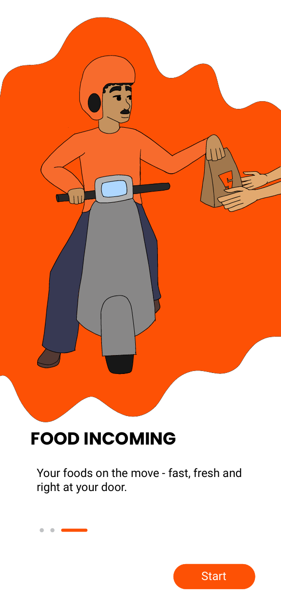

Research And Ideation

Mind-mapping on the concept of food delivery and user needs

Studying competitors of swiggy.


Sketching and refining illustrations for the onboarding screens
Final Onboarding



Reflection
Working on Swiggy’s onboarding made me more conscious of designing for speed and ease. It pushed me to simplify my ideas and focus on what users truly need in their first interaction with the app.